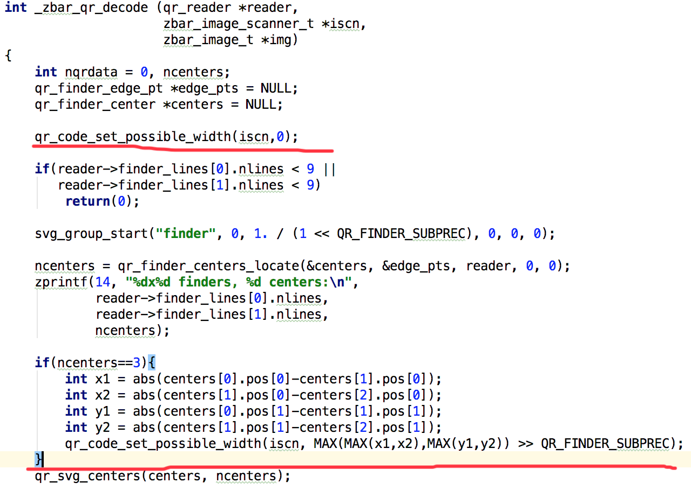

Zbar
编译
android 编译zbar可参考：https://blog.csdn.net/yanzhenjie1003/article/details/71641368
较小二维码放大
较小面积的二维码，zbar可能识别不出来，但是可能会检测出二维码的三个定位点，基于这个前提，从定位点计算出二维码的预览大小，从而决定相机是否需要调节焦距放大图像。
- 关注核心方法
zbar中关于二维码识别的相关代码在
qrcode目录下，qrdec.c中的_zbar_qr_decode是识别二维码的入口方法。

通过打日志可观察到，大部分较小的二维码即使不能识别出来，也能首先找到到三个定位点，即上图的ncenters。
对于这三个定位点，取最大坐标差值，可计算出二维码图像的大致大小，我们把这个大小放到zbar_image_scanner_s结构体中，增加一个整形成员变量width。
struct zbar_image_scanner_s {
zbar_scanner_t *scn; /* associated linear intensity scanner */
zbar_decoder_t *dcode; /* associated symbol decoder */
#ifdef ENABLE_QRCODE
qr_reader *qr; /* QR Code 2D reader */
#endif
int width; /*加一个成员*/
//...
zbar_image_scanner_s结构体对应Java中的ImageScanner。
在jni接口中增加JNI方法，从zbar_image_scanner_s中取出width参数。
JNIEXPORT jint JNICALL
Java_net_sourceforge_zbar_ImageScanner_getPossibleWidth (JNIEnv *env,
jobject obj)
{
zbar_image_scanner_t *zscn = GET_PEER(ImageScanner, obj);
return zbar_image_scanner_get_possible_width(zscn);
}
最后，在java层拿到二维码定位点间距，相对于扫描窗口，判断是否太小，计算出zoom值，即可实现二维码的放大识别。
Camera.Parameters pa = camera.getParameters();
if (!pa.isZoomSupported()) {
return;
}
int possibleWidth = mScanner.getPossibleWidth();//定位间距
int windowWidth = (int) (imagePreviewRect.width() * 0.5f);//阈值，不需要放太大
if (possibleWidth > 1 && possibleWidth < windowWidth) {
int maxRealZoom = windowWidth * 100 / possibleWidth;
int max = getMaxZoomIndex(pa, maxRealZoom);
if (max > zoomMax) {
zoomMax = max;
}
if (zoom < zoomMax / 2) {
zoom *= 2;//二倍增长
} else {
zoom = zoomMax;
}
if (pa.getZoom() != zoom) {
pa.setZoom(zoom);
camera.setParameters(pa);
}
}